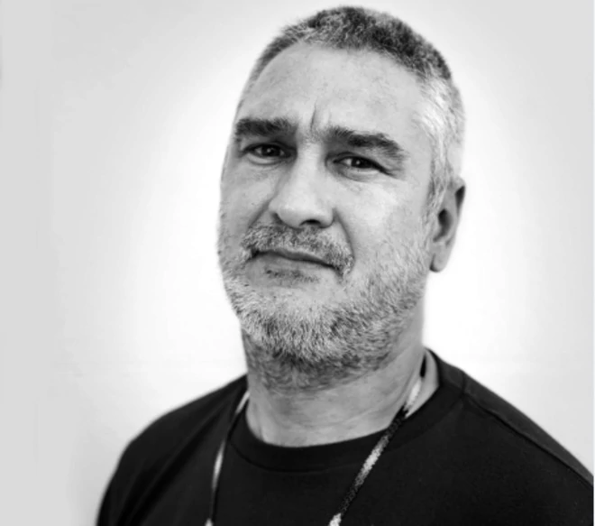
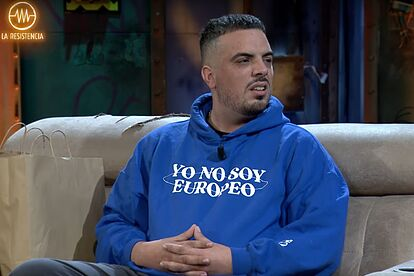
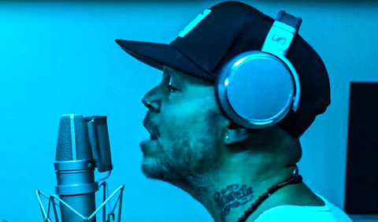

Kendrick Lamar Duckworth (Compton, California, 17 de junio de 1987) es un rapero, compositor y productor discográfico estadounidense. Ha sido aclamado por críticos, músicos y fanáticos por sus vívidas letras y narraciones sobre sus experiencias y problemáticas dentro de la cultura afroamericana y del hip-hop, llegando a ser nombrado "la voz líder de una generación". Criado en Compton, California, Kendrick inició su carrera como un adolescente, bajo el seudónimo K-Dot. Tras lanzar un mixtape que llamó la atención local y que le brindó su primer contrato con la discográfica independiente,Top Dawg Entertainment, Lamar lanzó los proyectos Overly Dedicated (2010) y Section.80 (2011) que le brindaron un masivo seguimiento en Internet y la oportunidad de colaborar con varios artistas importantes de la escena del hip hop.
Luego de ganarse un contrato con la compañía discográfica de Dr. Dre, Interscope Records, Lamar abandonaría su faceta independiente y produciría su primer gran álbum de estudio, Good Kid, M.A.A.D City (2012). Descrito como "una corta película por Kendrick Lamar", el disco es un álbum conceptual sobre sus vivencias durante su adolescencia en la peligrosa ciudad de Compton; un éxito crítico y comercial, el disco siendo certificado platino por la Asociación Industrial Discográfica de Estados Unidos. Su siguiente álbum, To Pimp a Butterfly (2015), fue aclamado mundialmente por incorporar elementos de funk, soul, jazz y spoken word, y sus conceptos centrados alrededor de las problématicas en la experiencia de ser afroestadounidense, y el ascendiente estatus social de Lamar. Fue su primer álbum en debutar en el primer puesto en la lista Billboard 200 y es considerado el mejor disco de la década de los 2010.Fue continuado con el lanzamiento de Untitled Unmastered (2016), una recopilación de demos que no llegaron a ser incluidos en To Pimp a Butterfly, y DAMN. (2017), que también fue un éxito rotundo; su sencillo principal HUMBLE. alcanzó el primer puesto en la lista Billboard Hot 100 y fue el primer álbum que ganó el Premio Pulitzer sin ser del género de jazz ni de música clásica. Tras cinco años sin sacar música, en 2022 Lamar volvería con un nuevo álbum, Mr. Morale & The Big Steppers.
Lamar ganó muchos elogios y premios a lo largo de la carrera, incluyendo 13 Premios Grammy de 37 nominaciones de 2014 a 2019. También incluyen dos American Music Awards, cinco Billboard Music Awards, un Brit Award, 11 MTV Video Music Awards, un Pulitzer Prize y una nominación al Óscar. La revista Time lo incluyó entre las 100 personas más influyentes del mundo en 2016.En 2015, recibió el premio Generational Icon Award del Senado Estatal de California. Tres de sus álbumes de estudio fueron incluidos en la lista de Rolling Stone de los 500 mejores álbumes de todos los tiempos
Borja Jiménez Mérida (Santa Cruz de Tenerife, Canarias, 14 de marzo de 1994) más conocido por su nombre artístico Bejo, es un cantante de rap español.
Es en el año 2006 cuando comenzó a escribir canciones. En 2012 fue nominado, junto a Don Patricio y Borja Jiménez Mérida, al goya por mejor canción original por el tema "Nuestra playa eres tú" de la película Maktub.En 2014, formó el grupo musical Locoplaya, junto a Don Patricio y a Uge Fernández. No será hasta 2013 cuando debute en solitario con la maqueta "Creo" conformada por 14 canciones y al año siguiente publicara su segundo trabajo en solitario "Fundamental" un EP compuesto con cuatro temas y en 2016 junto a su amigo Don Patricio lanza el EP "Estepa". En 2017 lanzara “Hipi Hapa Vacilanduki” su primer álbum de estudio con el cual empezara a ganar más repercusión. En 2018 saca su 2.º álbum de estudio titulado “Parafernalio” que mezcla ritmos alegres con letras más intimas. En junio de 2021 fue lanzado su disco “TRIPI HAPA” junto al productor Cookin' Soul.
Info BejoJavier Ibarra Ramos (Zaragoza, España, 1 de marzo de 1980),más conocido por su nombre artístico Kase.O, es un rapero, compositor y productor español, miembro del grupo de rap español Violadores del Verso junto a los también raperos SHO-HAI y Lírico, y el DJ R de Rumba. Es considerado habitualmente como uno de los raperos más conocidos de habla castellana por la comunidad y los medios.Lleva activo desde 1993 hasta la actualidad, siendo un icono y referente del rap español.
Kase.O a lo largo de su carrera, llegó a lanzar hasta siete álbumes de estudio con Violadores del Verso desde 1998 hasta 2006. Luego, en 2011, lanzó en solitario «Kase.O Jazz Magnetism», un disco en que fusiona hip hop y jazz, remasterizando algunos éxitos del zaragozano y creando otros nuevos en conjunto con la banda Jazz Magnetism. En 2015 lanzó Previo, un adelanto a su LP que saldría el próximo año. En 2016 sacaría lo que fue su mayor éxito individual, El Círculo, nominado en múltiples ocasiones entre ellas los Grammy Latino,suponiendo una revelación para el rap y ganador del disco de oro,premio recibido anteriormente con Violadores del Verso
Info KaseOPedro Armando Navarro (Málaga, España, 29 de enero de 1988), mejor conocido por su nombre artístico Foyone, es un rapero, cantante y compositor español de rap. Es conocido por ser uno de los representantes más relevantes del rap español y creador de la serie de canciones tituladas Rap Sin Corte.
Nacido en Málaga en el año 1991, sus inicios en el mundo del hip hop y nombre artístico nacieron del grafiti, sin embargo, se estableció este del todo al momento de lanzar su primer sencillo en el año 2011.
-Inicios- El primer sencillo documentado de Foyone se publicó en el año 2011, posterior a eso empezó una serie de freestyles titulados #RapSinCorte, los cuales sigue sacando en la actualidad, este consta de sencillos grabados en el momento en distintas partes del mundo a fines del mismo año lanzó su álbum debut titulado Mi Zoológico el cual tuvo 11 sencillos. ·2013-2015: Dólares Mentales y La Jaula de Oro En el año 2013 logró concretar su segundo álbum titulado Dólares Mentales, este disco fue su primera colaboración con su DJ actual Sceno y contiene 20 temas con colaboraciones de El Niño Snake, Jokerfeller y Kale & Spok. En el mismo año Foyone junto a su productor GHARUDA concretaron su primer tour nacional. Al mismo tiempo sus «RapSinCorte» empezaron a tener millones de visitas y el artista malagueño empezó a ganar reputación mundial. En el año 2014 Pedro le dio luz a su nuevo álbum titulado El Mesías que tuvo 12 sencillos y 3 videos. En el año 2015 concretó su tercer álbum titulado La Jaula de Oro, este contó con 23 sencillos y videoclips de estos como «Conversación con Dios», el reconocimiento empezó a ser internacional, ya con un Foyone popularizado en la cultura del rap, el artista presentó el disco en países como Argentina, Chile, México, Estados Unidos, Perú, etc. ·2016-2019: Rico sin denuncia, freestyle y giras internacionales En el año 2017 lanzó su cuarto disco titulado Rico sin denuncia el cual contó con 14 sencillos y featurings con artistas como Kase.O, Akapellah, Ayax y Prok, etc. En el año 2018 Navarro lanzó un videojuego titulado La Cura, en el que expresa lo más profundo de sus pensamientos. El EP, homónimo, constó de 7 sencillos y un corte de la Serie RAPSINCORTE, volumen XXXVI. En 2019 siguió con sus presentaciones en locaciones como Hip Hop Street Vícar, y también fue denominado como uno de los artistas españoles con más éxito en Latinoamérica.A fines de ese mismo año anunció la gira de lo que sería su próximo disco titulado Presidente, en esta se presentó en más de 13 ciudades de España y 5 países de Sudamérica. ·2020-presente: Presidente, YNSE y quincuagésimo Rap Sin Corte En el año 2020 Foyone lanzó su sexto álbum de estudio titulado Presidente, este tuvo una gran expansión cultural contando con 18 sencillos y colaboraciones con artistas como Fernandocosta, Ayax y Prok, etc. En el año 2021 lanzó junto a su Dj y productor Sceno un EP titulado Yo no soy Europeo el cual constó de 10 sencillos, este fue el proyecto posterior a la Pandemia de COVID-19 del artista malagueño y dio paso a las vueltas a los recitales del mismo. También fue presentado en La resistencia. En noviembre del mismo año el rapero malagueño presentó a lo largo de una semana 3 ediciones de la serie «RapSinCorte» para así llegar al número cincuenta (50) de la serie, en la quincuagésima edición lanzó un videoclip en colaboración a los artistas Toteking Kase.O, Recycled J, Ayax y Prok, Fernandocosta, Bejo, Dollar, Ptazeta, y otros, esto terminó dando pie a la presentación de Rap Sin Corte como nuevo álbum, este juntó a todas las ediciones presentadas por Foyone desde el primero en el año 2011 hasta el cincuenta (50) en el 2021.
Info FoyoneRené Pérez Joglar (San Juan, Puerto Rico; 23 de febrero de 1978), conocido artísticamente como Residente, es un rapero, compositor, cantante, productor y activista puertorriqueño. Fue miembro fundador y vocalista de Calle 13 (2004-2014), banda que integró junto a su hermana Ileana Cabra «iLe» y su hermanastro Eduardo Cabra «Visitante». En 2015 inició su carrera como solista.Su música combina la música del mundo y el contenido de sus letras principalmente están relacionados con temas sociales y políticos.Como líder de Calle 13 ha ganado un total de 31 premios Grammy Latinos y en su carrera en solitario otros 5. [cita requerida] Ha colaborado en campañas sociales con Unicef y Amnistía Internacional y es defensor de la educación pública latinoamericana y los derechos de los pueblos indígenas. Fue censurado en Puerto Rico por insultar públicamente al gobernador Luis Fortuño en 2009, luego de que este terminara con 30 000 empleos públicos en el marco de su Plan de Reconstrucción Económica.
